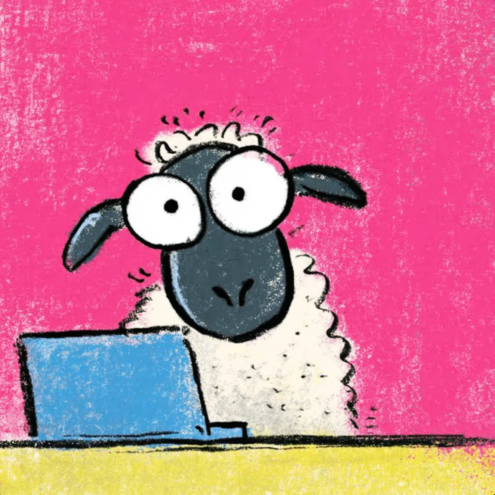

<!DOCTYPE html><html lang="en"><head><title>aaaloooooof | it turns a sandwich into a baquet</title><link rel="preconnect" href="https://fonts.googleapis.com">
<link rel="preconnect" href="https://fonts.gstatic.com" crossorigin>
<link href="https://fonts.googleapis.com/css2?family=Instrument+Serif:ital@0;1&family=Noto+Serif+SC:wght@900&display=swap" rel="stylesheet"><meta charset="utf-8"><meta name="viewport" content="width=device-width,initial-scale=1,maximum-scale=2"><meta http-equiv="X-UA-Compatible" content="IE=edge,chrome=1"><meta name="renderer" content="webkit"><meta name="theme-color" content="#222325"><meta name="apple-mobile-web-app-status-bar-style" content="#222325"><meta name="msapplication-navbutton-color" content="#222325"><link rel="stylesheet" href="https://cdn.jsdelivr.net/gh/SimonAKing/font/font.min.css"><link rel="stylesheet" href="css/style.css"><meta http-equiv="x-dns-prefetch-control" content="on"><link rel="dns-prefetch" href="https://cdn.jsdelivr.net"><link rel="prefetch" href="https://cdn.jsdelivr.net/"><meta name="description" content="aaaloooooof personal page"><link rel="icon" href="favicon.ico" type="image/x-icon"><link rel="shortcut icon" href="favicon.ico" type="image/x-icon"><!--[if lt IE 9]><style>.alert { padding: 15px; margin-bottom: 20px; border: 1px solid transparent; border-radius: 4px } .alert-danger { background-color: #f2dede; border-color: #ebccd1; color: #a94442; border-bottom: 1px solid #ebccd1 } .alert-link { color: #843534; font-weight: bold } .topframe { margin: 0; padding-left: 15px; padding-right: 15px; text-align: center; border-radius: 0; position: fixed; left: 0; right: 0; top: 0; z-index: 1000 }
</style><div class="alert alert-danger topframe">你的浏览器实在<strong>太太太太太太旧了</strong>，放学别走，升级完浏览器再说<a class="alert-link" target="_blank" href="http://browsehappy.com">立即升级</a></div><script src="https://cdn.bootcss.com/html5shiv/r29/html5.min.js"></script><script src="https://cdn.bootcss.com/respond.js/1.4.2/respond.min.js"></script><![endif]--></head></html><body><main><div class="content content-intro"><div class="content-inner"><canvas id="background"></canvas><div class="wrap fade"><h2 class="content-title">aaaloooooof</h2><h3 class="content-subtitle" original-content="把一切事物教给一切人的艺术">&nbsp;</h3><p class="intro-note">教育科技 / AI 产品 / 用户研究 / PRD</p><a class="enter">ENTER</a><div class="arrow arrow-1"></div><div class="arrow arrow-2"></div></div></div><div class="shape-wrap"><svg class="shape" width="100%" height="100vh" preserveAspectRatio="none" viewBox="0 0 1440 800" xmlns:pathdata="http://www.codrops.com/"><path d="M-44-50C-52.71 28.52 15.86 8.186 184 14.69 383.3 22.39 462.5 12.58 638 14 835.5 15.6 987 6.4 1194 13.86 1661 30.68 1652-36.74 1582-140.1 1512-243.5 15.88-589.5-44-50Z" pathdata:id="M -44,-50 C -137.1,117.4 67.86,445.5 236,452 435.3,459.7 500.5,242.6 676,244 873.5,245.6 957,522.4 1154,594 1593,753.7 1793,226.3 1582,-126 1371,-478.3 219.8,-524.2 -44,-50 Z"></path></svg></div></div><div class="content content-main"><header class="nt-bar"><a class="nt-name" href="index.html"><span class="mk">Jingyi <i>Lou</i></span><span class="sep"></span><span class="id">@aaaloooooof</span></a><button class="nt-toggle" aria-label="展开导航菜单" aria-expanded="false"><span></span></button></header><nav class="nt-menu" aria-label="全站导航"><a class="nt-link" href="index.html"><span class="no">01</span><span class="t">Hero · 首页</span></a><a class="nt-link" href="projects.html"><span class="no">02</span><span class="t">Projects · 产品墙</span></a><a class="nt-link" href="about.html"><span class="no">03</span><span class="t">About · 背景与思考</span></a><a class="nt-link" href="resume.html"><span class="no">04</span><span class="t">Contact · 联系方式</span></a><div class="nt-foot">教育科技 × AI 产品 · github.com/aaaloooooof</div></nav><div id="card"><canvas class="grid-background" id="gridCanvas"></canvas><div class="card-inner fade"><div class="hp"><div class="hp-home"><section class="hp-hero"><header class="pm-minimal-header"><h1 data-translate="name">aaaloooooof</h1><h2 id="signature" data-translate="signature" original-content="it turns a sandwich into a baquet">it turns a sandwich into a baquet</h2></header><p class="pm-keywords"><span>story</span><span class="dot">•</span><span>map</span><span class="dot">•</span><span>compass</span></p></section><nav class="gates" aria-label="板块导航"><span class="cross c1"></span><span class="cross c2"></span><span class="cross c3"></span><span class="cross c4"></span><a class="gate" href="projects.html"><span class="gate-ico"><svg viewBox="0 0 16 16" shape-rendering="crispEdges" fill="currentColor"><rect x="1" y="1" width="6" height="6"/><rect x="9" y="1" width="6" height="6"/><rect x="1" y="9" width="6" height="6"/><rect x="9" y="9" width="6" height="6"/></svg></span><span class="gate-tx"><span class="gate-no">01 · Projects</span><span class="gate-t">产品墙</span><span class="gate-d">主打 Demo · 实战数字 · 更多原型，胶片画廊浏览</span></span><span class="gate-ar">↗</span></a><a class="gate" href="about.html"><span class="gate-ico"><svg viewBox="0 0 16 16" shape-rendering="crispEdges" fill="currentColor"><rect x="2" y="1" width="12" height="2"/><rect x="2" y="5" width="9" height="2"/><rect x="2" y="9" width="12" height="2"/><rect x="2" y="13" width="6" height="2"/></svg></span><span class="gate-tx"><span class="gate-no">02 · About</span><span class="gate-t">背景与思考</span><span class="gate-d">研究 · 教学 · 内容，加上持续输出的 AI 思考笔记</span></span><span class="gate-ar">↗</span></a><a class="gate" href="resume.html"><span class="gate-ico"><svg viewBox="0 0 16 16" shape-rendering="crispEdges" fill="currentColor"><rect x="1" y="3" width="14" height="2"/><rect x="1" y="3" width="2" height="10"/><rect x="13" y="3" width="2" height="10"/><rect x="1" y="11" width="14" height="2"/><rect x="3" y="5" width="2" height="2"/><rect x="5" y="7" width="2" height="2"/><rect x="9" y="7" width="2" height="2"/><rect x="11" y="5" width="2" height="2"/></svg></span><span class="gate-tx"><span class="gate-no">03 · Contact</span><span class="gate-t">联系方式</span><span class="gate-d">正在找 AI 产品实习 · 邮箱 / GitHub / 微信</span></span><span class="gate-ar">↗</span></a></nav></div><footer class="hp-foot">© loujingyi · aaaloooooof</footer></div><style>
#card{display:block;overflow-y:auto;-webkit-overflow-scrolling:touch;padding:0;text-align:center}
#card .card-inner{width:100%;max-height:none;padding:0}
#gridCanvas{position:fixed;inset:0;width:100vw;height:100vh}
.nt-bar{position:fixed;top:0;left:0;right:0;z-index:10001;display:flex;align-items:flex-start;justify-content:space-between;padding:20px 26px;pointer-events:none;font-family:"Inter","PingFang SC","Microsoft YaHei",sans-serif}
.nt-name{pointer-events:auto;text-decoration:none;display:inline-flex;align-items:baseline;gap:10px;padding:8px 4px}.nt-name .mk{font-family:"Instrument Serif",Georgia,"Songti SC",serif;font-size:1.06rem;line-height:1;letter-spacing:0;color:#f2f2f4}.nt-name .mk i{font-style:italic}.nt-name .sep{width:1px;height:12px;background:rgba(255,255,255,.18);align-self:center}.nt-name .id{font-family:ui-monospace,"SF Mono",Menlo,monospace;font-size:.58rem;letter-spacing:.13em;color:#62626e;align-self:center;transition:color .3s}.nt-name:hover .id{color:#9aa0ac}


.nt-toggle{pointer-events:auto;width:46px;height:46px;border-radius:50%;border:1px solid rgba(255,255,255,.14);background:rgba(8,8,12,.55);backdrop-filter:blur(12px);-webkit-backdrop-filter:blur(12px);cursor:pointer;position:relative;transition:border-color .3s,transform .45s cubic-bezier(.4,0,.2,1)}
.nt-toggle:hover{border-color:rgba(255,255,255,.32)}
.nt-toggle span{position:absolute;top:50%;left:50%;width:16px;height:1.5px;background:#e8e8ec;transform:translate(-50%,-50%);transition:background .25s}
.nt-toggle span::before,.nt-toggle span::after{content:"";position:absolute;left:0;width:16px;height:1.5px;background:#e8e8ec;transition:transform .35s cubic-bezier(.4,0,.2,1)}
.nt-toggle span::before{top:-5px}
.nt-toggle span::after{top:5px}
.nt-toggle.open{transform:rotate(90deg);border-color:rgba(255,255,255,.4)}
.nt-toggle.open span{background:transparent}
.nt-toggle.open span::before{transform:translateY(5px) rotate(45deg)}
.nt-toggle.open span::after{transform:translateY(-5px) rotate(-45deg)}
.nt-menu{position:fixed;inset:0;z-index:10000;background:rgba(5,5,9,.96);backdrop-filter:blur(18px);-webkit-backdrop-filter:blur(18px);display:flex;flex-direction:column;justify-content:center;padding:0 8vw;opacity:0;visibility:hidden;transition:opacity .45s,visibility .45s;font-family:"Inter","PingFang SC","Microsoft YaHei",sans-serif}
.nt-menu.open{opacity:1;visibility:visible}
.nt-link{display:flex;align-items:baseline;gap:16px;padding:11px 0;text-decoration:none;border-bottom:1px solid rgba(255,255,255,.06);opacity:0;transform:translateY(20px);transition:opacity .5s,transform .5s}
.nt-menu.open .nt-link{opacity:1;transform:none}
.nt-menu.open .nt-link:nth-child(1){transition-delay:.06s}.nt-menu.open .nt-link:nth-child(2){transition-delay:.11s}
.nt-menu.open .nt-link:nth-child(3){transition-delay:.16s}.nt-menu.open .nt-link:nth-child(4){transition-delay:.21s}
.nt-menu.open .nt-link:nth-child(5){transition-delay:.26s}.nt-menu.open .nt-link:nth-child(6){transition-delay:.31s}
.nt-link .no{font-size:.7rem;letter-spacing:.2em;color:#62626e;width:2em}
.nt-link .t{font-size:clamp(1.05rem,2.4vw,1.45rem);font-weight:400;color:#cfcfd6;letter-spacing:.06em;transition:color .3s,letter-spacing .3s}
.nt-link:hover .t{color:#fff;letter-spacing:.12em}
.nt-foot{margin-top:36px;font-size:.72rem;letter-spacing:.16em;color:#565662;text-transform:uppercase}
.hp{position:relative;z-index:2;max-width:1080px;margin:0 auto;padding:0 28px 60px;text-align:left;color:#e8eaef;font-family:"Inter","PingFang SC","Microsoft YaHei",sans-serif;line-height:1.7}
.hp-home{min-height:100vh;display:flex;flex-direction:column;justify-content:center;padding:96px 0 20px}
.hp-hero{display:flex;flex-direction:column;align-items:center;text-align:center}
.hp-hero .pm-minimal-header img{width:104px!important;height:104px!important}
.gates{position:relative;display:grid;grid-template-columns:repeat(3,1fr);gap:30px;max-width:820px;width:100%;margin:50px auto 0}
.gate{position:relative;display:flex;flex-direction:column;gap:12px;aspect-ratio:1/1;padding:20px;text-decoration:none;color:#c9cdd6;border:1px solid rgba(255,255,255,.1);background:rgba(10,10,15,.5);backdrop-filter:blur(6px);-webkit-backdrop-filter:blur(6px);transition:border-color .3s,background .3s,transform .18s ease-out}
.gate:hover{border-color:rgba(255,255,255,.32);background:rgba(255,255,255,.045);transform:translateY(-5px)}
.gate-ico{width:44px;height:44px;flex:none;border:1px solid rgba(255,255,255,.16);display:flex;align-items:center;justify-content:center;color:#d8dae2;position:relative;transition:background .3s,border-color .3s,color .3s}
.gate-ico svg{width:20px;height:20px}
.gate-ico::before,.gate-ico::after{content:"";position:absolute;width:5px;height:5px;border:1px solid rgba(255,255,255,.35);transition:border-color .3s}
.gate-ico::before{top:-3px;left:-3px;border-right:none;border-bottom:none}
.gate-ico::after{bottom:-3px;right:-3px;border-left:none;border-top:none}
.gate:hover .gate-ico{background:#e8eaef;color:#060608;border-color:#e8eaef}
.gate:hover .gate-ico::before,.gate:hover .gate-ico::after{border-color:#e8eaef}
.gate-tx{display:flex;flex-direction:column;gap:3px}
.gate-no{font-size:.62rem;letter-spacing:.24em;text-transform:uppercase;color:#6f7480}
.gate-t{font-size:1.02rem;font-weight:500;color:#eceef2;letter-spacing:.04em}
.gate-d{font-size:.74rem;color:#8f939f;line-height:1.6}
.gate-ar{position:absolute;top:16px;right:16px;font-size:.95rem;color:#6f7480;transition:transform .3s,color .3s}
.gate:hover .gate-ar{transform:translate(3px,-3px);color:#fff}
.cross{position:absolute;width:11px;height:11px;pointer-events:none}
.cross::before,.cross::after{content:"";position:absolute;background:rgba(255,255,255,.28)}
.cross::before{left:5px;top:0;width:1px;height:11px}
.cross::after{top:5px;left:0;width:11px;height:1px}
.c1{top:-6px;left:-6px}.c2{top:-6px;right:-6px}.c3{bottom:-6px;left:-6px}.c4{bottom:-6px;right:-6px}
.hp-foot{text-align:center;font-size:.78rem;color:#565a66;margin-top:40px;letter-spacing:.06em}
@media (max-width:640px){.hp{padding:0 20px 32px}.gates{grid-template-columns:1fr;max-width:320px;margin-top:38px}.gate{aspect-ratio:auto;flex-direction:row;align-items:center;gap:14px;padding:16px 18px}.gate-ar{position:static;margin-left:auto}}
body,body a,body button,body .enter,body .nt-toggle{cursor:none}
.cx{position:fixed;top:0;left:0;width:22px;height:22px;pointer-events:none;z-index:10050;transform:translate(-50%,-50%);transition:width .25s,height .25s}
.cx::before,.cx::after{content:"";position:absolute;background:rgba(232,234,239,.85)}
.cx::before{left:50%;top:0;width:1px;height:100%;transform:translateX(-50%)}
.cx::after{top:50%;left:0;height:1px;width:100%;transform:translateY(-50%)}
.cx.snap{width:44px;height:44px}
@media (hover:none),(pointer:coarse){.cx{display:none}body,body a,body button,body .enter,body .nt-toggle{cursor:auto}}
.pg-veil{position:fixed;inset:0;background:#060608;opacity:0;pointer-events:none;transition:opacity .22s ease;z-index:10060}
.pg-veil.on{opacity:1}
</style></div></div></div><script src="https://cdn.jsdelivr.net/npm/animejs@3.2.1/lib/anime.min.js"></script><script>window.$ = selector => document.querySelector(selector)
const getOriginalContent = selector => $(selector).getAttribute("original-content")
window.subtitle = getOriginalContent(".content-subtitle")
window.signature = getOriginalContent("#signature")
window.config = {
	SIM_RESOLUTION: 128,
	DYE_RESOLUTION: 1024,
	CAPTURE_RESOLUTION: 512,
	DENSITY_DISSIPATION: 1,
	VELOCITY_DISSIPATION: 0.2,
	PRESSURE: 0.8,
	PRESSURE_ITERATIONS: 20,
	CURL: 30,
	SPLAT_RADIUS: 0.25,
	SPLAT_FORCE: 6000,
	SHADING: true,
	COLORFUL: true,
	COLOR_UPDATE_SPEED: 10,
	PAUSED: false,
	BACK_COLOR: { r: 30, g: 31, b: 33 },
	TRANSPARENT: false,
	BLOOM: true,
	BLOOM_ITERATIONS: 8,
	BLOOM_RESOLUTION: 256,
	BLOOM_INTENSITY: 0.4,
	BLOOM_THRESHOLD: 0.8,
	BLOOM_SOFT_KNEE: 0.7,
	SUNRAYS: true,
	SUNRAYS_RESOLUTION: 196,
	SUNRAYS_WEIGHT: 1.0,
}
</script><script src="js/main.js"></script><script src="js/background.js"></script><script>
/* 十字光标 */
(function(){
  if(window.matchMedia&&window.matchMedia('(hover: none), (pointer: coarse)').matches)return;
  var cx=document.createElement('div');cx.className='cx';document.body.appendChild(cx);
  document.addEventListener('mousemove',function(e){
    cx.style.left=e.clientX+'px';cx.style.top=e.clientY+'px';
    var t=e.target.closest?e.target.closest('a,button,[role="button"],.enter,.gate,.nt-toggle,.nt-link'):null;
    cx.classList.toggle('snap',!!t);
  },{passive:true});
})();
/* 方块 3D 倾斜 */
(function(){
  if(window.matchMedia&&window.matchMedia('(hover: none), (pointer: coarse)').matches)return;
  document.querySelectorAll('.gate').forEach(function(g){
    g.addEventListener('mousemove',function(e){
      var r=g.getBoundingClientRect();
      var px=(e.clientX-r.left)/r.width-.5,py=(e.clientY-r.top)/r.height-.5;
      g.style.transform='translateY(-5px) perspective(700px) rotateY('+(px*6)+'deg) rotateX('+(-py*6)+'deg)';
    },{passive:true});
    g.addEventListener('mouseleave',function(){g.style.transform='';});
  });
})();
/* 出场翻页过渡 */
(function(){
  if(window.matchMedia&&window.matchMedia('(prefers-reduced-motion: reduce)').matches)return;
  document.addEventListener('click',function(e){
    var a=e.target.closest?e.target.closest('a[href]'):null;
    if(!a)return;
    var href=a.getAttribute('href');
    if(!href||a.target==='_blank'||href.indexOf('http')===0||!/\.html(#.*)?$/.test(href))return;
    e.preventDefault();
    var v=document.createElement('div');v.className='pg-veil';document.body.appendChild(v);
    requestAnimationFrame(function(){v.classList.add('on');});
    setTimeout(function(){location.href=href;},220);
  });
})();
</script></main></body>